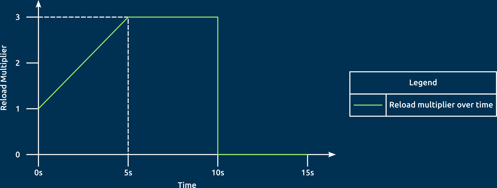
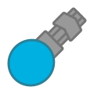

The RampUpGun is a Submachine with reload that ramps up as it fires continuously, but can only fire in bursts.
It resembles the Submachine, except that its rectangular barrel holder is now a chevron.
The RampUpGun functions simlarly to the Submachine, but it increases the reload from 1x to 3x in the first 5 seconds of fire, then manages to shoot at max reload for another 5 seconds, then has to cool down for the next 5 seconds. (see graph below)

Graph 1: How the RampUpGun changes reload when left-click is held for 15 seconds.

Tier 5 Tank
Upgrades from Submachine
Weapons:
Inherits base body stats from Submachine
A Submachine with insane reload, but can only fire in long bursts.